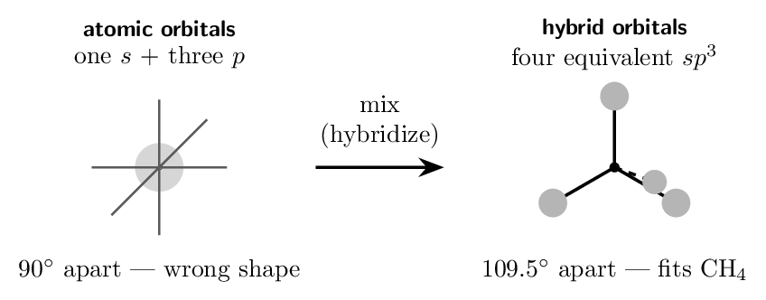
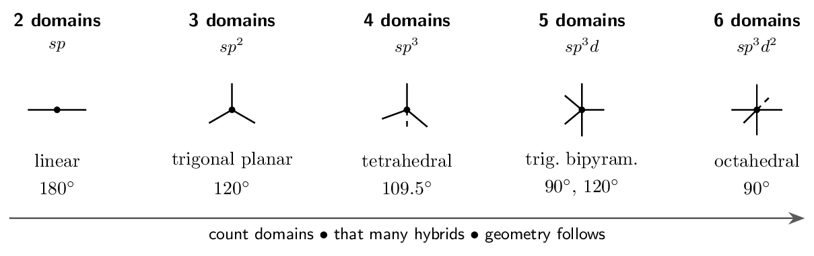
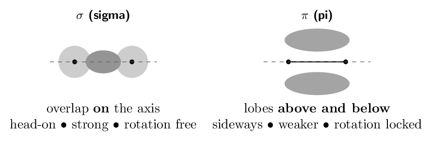
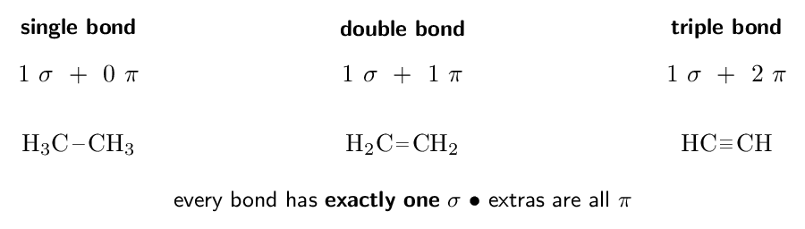
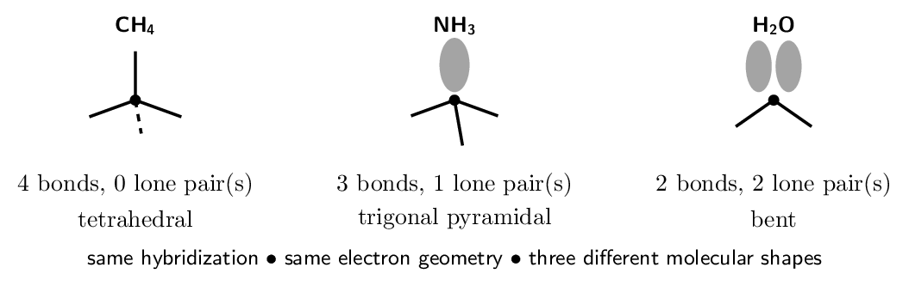
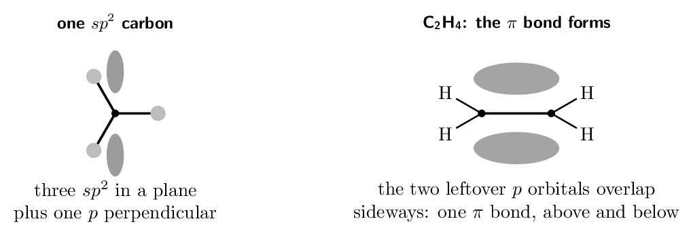
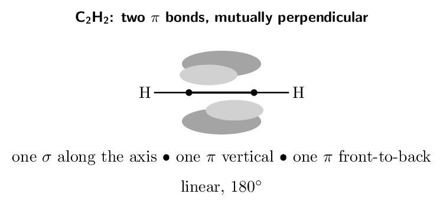
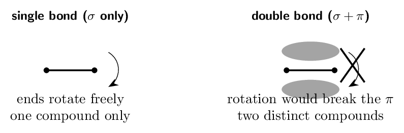
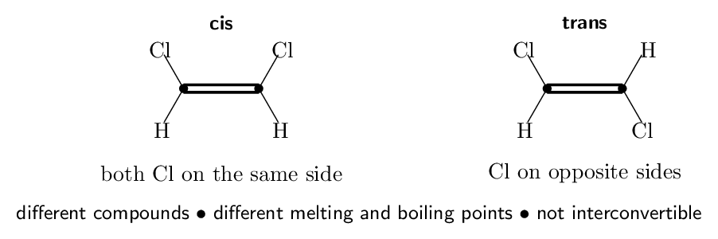
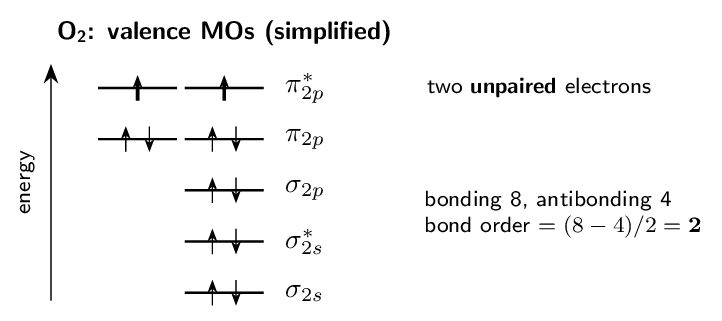

Each skill is a ladder: a fully worked example in the solid-framed box, then four YOUR TURN questions in the dashed box — same skill, new numbers, no help. Work all four before checking the gray check: line; a tracker tick needs all four right first time.
A scope warning that will save you hours. Zumdahl's §9.2–9.5 — the whole Molecular Orbital chapter, MO diagrams, bond order from MO counts, homonuclear and heteronuclear diatomics — is not on the AP CED. It was dropped in the 2019 redesign. Ladders 1–8 cover §9.1, which is assessed and assessed heavily. Ladder 9 is MO theory, marked as enrichment: read it if you are curious or heading for college chemistry, skip it entirely without penalty. The whole of §9.1 in one sentence. A carbon atom's real orbitals (\(2s\) and three \(2p\)) do not point the right way to make four identical bonds — so we mix them into new ones that do, and the number we mix is set by the number of electron domains VSEPR already told you.Ladder 1 • Why hybridization is needed
ZUM §9.1Methane is a fact: four identical \(\ce{C-H}\) bonds, all 109.5 degree apart. Carbon's ground state is \(1s^{2}\,2s^{2}\,2p^{2}\) — one filled \(s\), two half-filled \(p\) and one empty \(p\). Those orbitals could not produce four identical bonds if we wanted them to: the \(p\) orbitals are mutually perpendicular (90 degree) and the \(s\) is spherical.

- How many hybrid orbitals result from mixing one \(s\) and two \(p\)
orbitals, and what is the set called? three, \(sp^{2}\)
- Why can four unmixed \(2p\) orbitals not explain methane?
carbon has only three \(2p\), and they are 90 degree apart
- If an atom uses \(sp^{3}d\) hybridization, how many atomic orbitals
were mixed? five
- Is hybridization something an atom physically does? Explain.
no — it is a model, chosen to match measured geometry
(a) three, \(sp^{2}\) (b) carbon has only three \(2p\), and they are 90 degree apart (c) five (d) no — it is a model, chosen to match measured geometry
Ladder 2 • Domains to hybridization
ZUM §9.1You already count electron domains for VSEPR. The same count gives the hybridization — one hybrid orbital per domain.

Count domains, not bonds. A double or triple bond is one domain, and a lone pair is a domain too. Carbon in \(\ce{CO2}\) has two double bonds — two domains — so it is \(sp\), not \(sp^{3}\). Counting bonds instead of domains is the single commonest error in this chapter.
- \(\ce{NH3}\) \(sp^{3}\)
- \(\ce{BF3}\) \(sp^{2}\)
- \(\ce{PCl5}\) \(sp^{3}d\)
- \(\ce{HCN}\) — give the hybridization of the carbon, and say why
the triple bond does not make it \(sp^{3}\). \(sp\) — the triple bond is one domain
(a) \(sp^{3}\) (b) \(sp^{2}\) (c) \(sp^{3}d\) (d) \(sp\) — the triple bond is one domain
Ladder 3 • Sigma and pi bonds
ZUM §9.1Two ways for orbitals to overlap, and the difference decides almost everything about the bond.


Count: four \(\ce{C-H}\) \(\sigma\) bonds, one \(\ce{C-C}\) \(\sigma\), and one \(\pi\). \[ \mathbf{5~\sigma \;+\; 1~\pi} \]
Ethyne, \(\ce{C2H2}\). Each carbon has two domains (\(\Rightarrow sp\)) and keeps two unhybridized \(p\) orbitals, which form two mutually perpendicular \(\pi\) bonds.Count: two \(\ce{C-H}\) \(\sigma\), one \(\ce{C-C}\) \(\sigma\), two \(\pi\). \[ \mathbf{3~\sigma \;+\; 2~\pi} \]
The bookkeeping rule. Hybrid orbitals make \(\sigma\) bonds; leftover unhybridized \(p\) orbitals make \(\pi\) bonds. Count the hybrids used and the \(p\) orbitals left over, and the two numbers must account for every bond.- How many \(\sigma\) and \(\pi\) bonds in \(\ce{CO2}\)?
2 \(\sigma\), 2 \(\pi\)
- How many \(\sigma\) and \(\pi\) bonds in \(\ce{HCN}\)?
2 \(\sigma\), 2 \(\pi\)
- How many unhybridized \(p\) orbitals remain on an \(sp^{2}\) carbon,
and what do they do? one — it forms the \(\pi\) bond
- Which is stronger, a \(\sigma\) or a \(\pi\) bond, and why?
\(\sigma\) — head-on overlap is greater
(a) 2 \(\sigma\), 2 \(\pi\) (b) 2 \(\sigma\), 2 \(\pi\) (c) one — it forms the \(\pi\) bond (d) \(\sigma\) — head-on overlap is greater
Ladder 4 • \(sp^{3}\) in detail
ZUM §9.1Four domains, four hybrids, tetrahedral electron geometry — and the molecular shape depends on how many of those domains are lone pairs.

All three molecules above are \(sp^{3}\). Why do their shapes differ?
Because hybridization answers a different question than shape does. Hybridization is set by the number of domains — four in every case here, so four hybrid orbitals, so \(sp^{3}\), so a tetrahedral arrangement of domains. Molecular shape names only the atoms. Methane's four domains are all bonds, so the shape is tetrahedral. Ammonia spends one domain on a lone pair, which is invisible, so the three remaining atoms describe a pyramid. Water spends two, leaving a bent arrangement. The consequence for bond angles. A lone pair occupies its \(sp^{3}\) orbital but is held by only one nucleus, so it spreads wider and compresses the rest: 109.5 degree in \(\ce{CH4}\), 107 degree in \(\ce{NH3}\), 104.5 degree in \(\ce{H2O}\). The hybridization never changed — only how many domains you can see. So the safe phrasing on an exam: “the central atom is \(sp^{3}\) hybridized, giving a tetrahedral electron geometry and a bent molecular shape”. Naming both keeps you right whichever the question asked for.- Hybridization, electron geometry, and molecular shape for
\(\ce{PH3}\). \(sp^{3}\), tetrahedral, trigonal pyramidal
- Same three for \(\ce{H2S}\). \(sp^{3}\), tetrahedral, bent
- Same three for \(\ce{CCl4}\). \(sp^{3}\), tetrahedral, tetrahedral
- Two molecules are both \(sp^{3}\). Must they have the same
molecular shape? Explain. no — it depends on how many domains are lone pairs
(a) \(sp^{3}\), tetrahedral, trigonal pyramidal (b) \(sp^{3}\), tetrahedral, bent (c) \(sp^{3}\), tetrahedral, tetrahedral (d) no — it depends on how many domains are lone pairs
Ladder 5 • \(sp^{2}\) and the pi bond
ZUM §9.1Three domains means three hybrids — and one \(p\) orbital left over, standing perpendicular to the plane of the three.

- Hybridization of the carbon in \(\ce{COCl2}\) (one \(\ce{C=O}\), two
\(\ce{C-Cl}\)). \(sp^{2}\)
- Hybridization of the nitrogen in \(\ce{HNO2}\) where N has one
double bond, one single bond and one lone pair.
\(sp^{2}\)
- How many \(\sigma\) and \(\pi\) bonds does \(\ce{H2CO}\) have in total?
3 \(\sigma\), 1 \(\pi\)
- Why must every atom in \(\ce{H2CO}\) lie in one plane?
the three \(sp^{2}\) orbitals are coplanar
(a) \(sp^{2}\) (b) \(sp^{2}\) (c) 3 \(\sigma\), 1 \(\pi\) (d) the three \(sp^{2}\) orbitals are coplanar
Ladder 6 • \(sp\) and two pi bonds
ZUM §9.1Two domains means two hybrids, pointing opposite ways — and two unhybridized \(p\) orbitals left over, perpendicular to each other and to the bond axis.

- Hybridization of the carbon in \(\ce{HCN}\), and of the nitrogen.
both \(sp\)
- How many unhybridized \(p\) orbitals does an \(sp\) carbon keep?
two
- In \(\ce{C2H2}\), how many \(\sigma\) and \(\pi\) bonds are there in
total? 3 \(\sigma\), 2 \(\pi\)
- Rank \(sp\), \(sp^{2}\), \(sp^{3}\) by the bond angle they produce.
\(sp^{3}\) (109.5) \(<\) \(sp^{2}\) (120) \(<\) \(sp\) (180)
(a) both \(sp\) (b) two (c) 3 \(\sigma\), 2 \(\pi\) (d) \(sp^{3}\) (109.5) \(<\) \(sp^{2}\) (120) \(<\) \(sp\) (180)
Ladder 7 • Restricted rotation and isomers
ZUM §9.1A \(\sigma\) bond is cylindrically symmetric about the axis, so the ends can spin freely. A \(\pi\) bond is not: rotating one end by 90 degree would tear the sideways overlap apart.


So the two chlorines are stuck either on the same side (cis) or on opposite sides (trans), and these are two different compounds with different physical properties — different melting points, different boiling points, different dipole moments (cis is polar, trans is not).
The general statement: \(\pi\) bonds lock geometry. That single fact explains cis/trans isomerism, why fats are described as cis-unsaturated, and how vision works — the retinal molecule in your eye responds to light by flipping one cis double bond to trans.- Can \(\ce{H3C-CH3}\) show cis/trans isomerism?
Explain. no — free rotation about the \(\sigma\)
- Which bond in a double bond must break to allow rotation?
the \(\pi\)
- Of cis- and trans-1,2-dichloroethene, which is
polar? cis
- Why can a triple bond not show cis/trans
isomerism? it is linear, so there are no “sides”
(a) no — free rotation about the \(\sigma\) (b) the \(\pi\) (c) cis (d) it is linear, so there are no “sides”
Ladder 8 • Full analysis of a molecule
ZUM §9.1Everything from Ladders 1–7, applied in one pass. The order never changes:
The skeleton is \(\ce{CH3-C(=O)-O-H}\). Take the interior atoms one at a time.
Methyl carbon. Four single bonds \(=\) 4 domains \(\Rightarrow\) \(sp^{3}\), tetrahedral, 109.5 degree. Carbonyl carbon. One \(\ce{C=O}\) \(+\) two single bonds \(=\) 3 domains \(\Rightarrow\) \(sp^{2}\), trigonal planar, 120 degree. Carbonyl oxygen (the double-bonded one). One double bond \(+\) two lone pairs \(=\) 3 domains \(\Rightarrow\) \(sp^{2}\). Hydroxyl oxygen. Two single bonds \(+\) two lone pairs \(=\) 4 domains \(\Rightarrow\) \(sp^{3}\), bent at the oxygen. Bond count. Every single bond is one \(\sigma\); the one double bond adds a \(\pi\). Three \(\ce{C-H}\), one \(\ce{C-C}\), one \(\ce{C=O}\) \(\sigma\), one \(\ce{C-O}\) \(\sigma\), one \(\ce{O-H}\) \(=\) \[ \mathbf{7~\sigma \;+\; 1~\pi} \] What this molecule demonstrates. Four interior atoms, three different hybridizations, and two oxygens that differ from each other. A question asking only for “the hybridization of the central atom” would be meaningless here — which is why the procedure works atom by atom.- Hybridization of the methyl carbon. \(sp^{3}\)
- Hybridization of the nitrile carbon and of the nitrogen.
both \(sp\)
- Total \(\sigma\) and \(\pi\) bonds in the molecule.
5 \(\sigma\), 2 \(\pi\)
- Give the approximate \(\ce{H-C-H}\) angle and the \(\ce{C-C#N}\) angle.
109.5 degree and 180 degree
(a) \(sp^{3}\) (b) both \(sp\) (c) 5 \(\sigma\), 2 \(\pi\) (d) 109.5 degree and 180 degree
Ladder 9 • ENRICHMENT: molecular orbitals
ZUM §9.2–9.3Two atomic orbitals combine into two molecular orbitals: one bonding (lower energy, density between the nuclei) and one antibonding (higher, with a node between them).
\[ \text{bond order} = \frac{(\text{bonding e}^-) - (\text{antibonding e}^-)}{2} \]
- \(\ce{N2}\) has 10 valence electrons: 8 bonding, 2 antibonding. Give
the bond order.
- Is \(\ce{N2}\) paramagnetic or diamagnetic? diamagnetic — all paired
- What does a bond order of zero imply about a species?
it does not exist as a stable molecule
- State one thing the localized model does better than MO theory.
predicting molecular geometry
(a) 3 (b) diamagnetic — all paired (c) it does not exist as a stable molecule (d) predicting molecular geometry
Mastery tracker
Tick a row only if all four YOUR TURN questions were right on the first attempt. Ladder 9 is enrichment — an untickable row there costs you nothing.
| First try? | Skill | Ladder | If not, re-read… |
|---|---|---|---|
| \(\square\) | why hybridization exists | 1 | orbitals in \(=\) orbitals out |
| \(\square\) | domains to hybridization | 2 | domains, not bonds |
| \(\square\) | sigma and pi bonds | 3 | one \(\sigma\) per bond, rest \(\pi\) |
| \(\square\) | \(sp^{3}\) and lone pairs | 4 | hybrid vs molecular shape |
| \(\square\) | \(sp^{2}\) and the pi bond | 5 | the leftover \(p\) |
| \(\square\) | \(sp\) and two pi bonds | 6 | two leftover \(p\) |
| \(\square\) | restricted rotation, isomers | 7 | \(\pi\) locks geometry |
| \(\square\) | full molecular analysis | 8 | every interior atom |
| (opt.) | molecular orbitals | 9 | not assessed |
8/8 on Ladders 1–8: you have Chapter 9's assessed content. It is a short chapter by AP standards precisely because most of Zumdahl's Chapter 9 is off-syllabus — do not mistake its brevity for unimportance, because hybridization appears on nearly every structure question.
6–7: redo the missed ladders tomorrow, not today.
5 or fewer: the misses are almost certainly in Ladder 2, and everything downstream inherits them. Go back and practise counting domains on twenty Lewis structures — double and triple bonds as one, lone pairs as one each — until the count is automatic. Every other ladder in this chapter is built on that single skill.